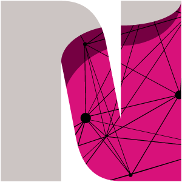
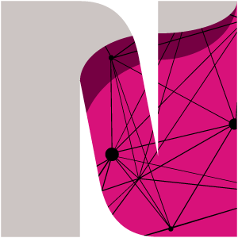

OUT OF THE SHADOWS is a journey through affective spaces, shaped by the stories of the women who are the protagonists of this documentary.
Explore these spaces by scrolling with your mouse or using your keyboard's arrow keys.
Each animated object holds valuable information and serves as a gateway to the stories of these extraordinary women. Engage with these objects to delve deeper.
As you navigate through each chapter, progress towards the luminous area at the end of the space. This guiding light will lead you to the next space.

Feel free to navigate your surroundings using the arrow keys on your keyboard. If your initial visibility is limited, don't worry – as you step out of the shadows, your perspective will gradually expand.


 
